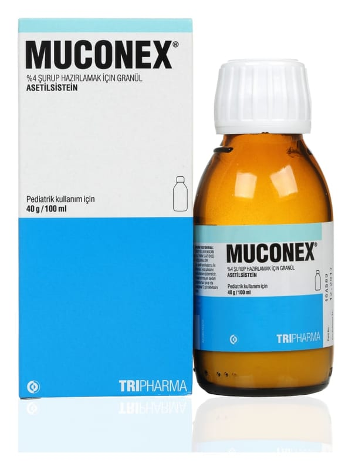

Muconex %4 Şurup Hazırlamak İçin Granül, 100 ml

Ne için kullanılır
KT · Bölüm 1MUCONEX %4 100 mL şurup hazırlamak için 40 gr (pediatrik) ve 150 mL şurup hazırlamak için 60 gr granül içeren şişelerde ambalajlanmıştır. MUCONEX etkin madde olarak asetilsistein içerir. Asetilsistein, bir amino asit olan sistein türevi bir ajandır. Balgam söktürücü etkiye sahiptir. Bu ilacı kullanmaya başlamadan önce bu KULLANMA TALİMATINI dikkatlice okuyunuz, çünkü sizin için önemli bilgiler içermektedir. • Bu kullanma talimatını saklayınız. Daha sonra tekrar okumaya ihtiyaç duyabilirsiniz. • Eğer ilave sorularınız olursa, lütfen doktorunuza veya eczacınıza danışınız. • Bu ilaç kişisel olarak sizin için reçete edilmiştir, başkalarına vermeyiniz. • Bu ilacın kullanımı sırasında, doktora veya hastaneye gittiğinizde doktorunuza bu ilacı kullandığınızı söyleyiniz. • Bu talimatta yazılanlara aynen uyunuz. İlaç hakkında size önerilen dozun dışında yüksek veya düşük doz kullanmayınız.
MUCONEX yoğun kıvamlı balgamın atılması, azaltılması, yoğunluğunun düzenlenmesi, ekspektorasyonun (balgamın atılabilmesi) kolaylaştırılması gereken durumlarda, bronkopulmoner (bronş ve akciğer) hastalıklarda, bronşiyal sekresyon (solunum yolu salgısı) bozukluklarının tedavisinde kullanılan mukolitik (balgamı, mukusu parçalayan) bir ilaçtır. Ayrıca yüksek doz parasetamol alımına bağlı olarak ortaya çıkan karaciğer yetmezliğinin önlenmesinde kullanılır. MUCONEX soğuk algınlığı ve solunum yollarının iltihaplanması (bronşit) durumunda balgam oluşmasını azaltır. Oluşan balgamları sulandırarak, öksürükle atılmasını kolaylaştırır.